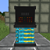
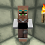
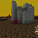

You'll find here the lists and explainations of all Electrona's mechanics.
Radioactivity effect is a potion effect that makes you sick over time, and you eventually die. The more the effect lasts and is strong, the more chance you have to die and get sick. (has nausea or slowness effect for example)
The Nuclear Generator is a small structure composed of a Cooler on the bottom and a Nuclear Generator Controller on the top. You can find a video that shows how the Nuclear Generator works right here.
doBlackholesExist and
doNuclearBombsExplode
Those Gamerules are boolean type gamerules. The first one specifies if black holes can exist or not. If set to true, Sigularities can spawn when a Nuclear Generator Controller explodes. If a Singularity has already spawned, setting this value to false can prevent the black hole's expansion. The second one specifies if a Nuclear Bomb can explose or not. If set to true, they can.
Engineer Villager ProfessionEngineer villager profession is a new villager profession. To obtain it, you must place a villager without profession next to a Compressor and the villager will obtain the Engineer profession. You can find all the trades of the Engineer here.
The Nuclear Biome is a biome that is made of Nuclear stuff (Radioactive Dirt, ...) and it has also ruined structures.
"A Whole New World!" is an advancement you get when you mine your first Tin Ore! It marks your entrance in the world of Electrona!
"Machinator!" is an advancement you get when you craft your first machine.
"Your First Compression!" is an advancement you get when you compress your first item with a Compressor.
"Steel Getting An Upgrade!" is an advancement you get when you craft your first Steel Tool. Did you get the pun?
"Leader!" is an advancement you get when you craft and wear a full Lead Armor.
"Generator!" is an advancement you get when you craft your first generator.
"Unlocked Potential!" is an advancement you get when you place a Nuclear Generator Controller over a Cooler to build a Nuclear Generator.
"I Am.. Inevitable!" is an advancement you get when you make a Singularity spawn by exploding a Nuclear Generator Controller. Did you get the reference?
"A New Mechanic!" is an advancement you get by purifying Concentrated Uranium with a Purificator.
"We Have Work To Do!" is an advancement you get when you first trade with an Engineer.
"Master Engineer!" is an advancement you get when you upgrade an Engineer to the Master level.
"SkyHigh!" is an advancement you get when you fligh over 500 blocks high with Mechanic Wings.
Lumberjack enchantment can only be applied to a Steel Axe. It allows the player to cut a whole tree with a single cut.
Smelting enchantment can only be applied to a Steel Pickaxe. It allows the player to smelt directly the ores or blocks mined.
Thundering enchantment can only be applied to a Steel Axe. It allows the player to summon a lightning bolt by right-clicking on a block.
Veinminer enchantment can only be applied to a Steel Pickaxe. It allows the player to mine an entire vein of ores with only one block mined.
forge:biomassThis tag gathers all the biomass used by the Biomass Generator in order to change them into energy. You can add your own biomass to this tag if you're a modmaker! You can find here a complete list of the vanilla items in this tag.
forge:ingots/tinThis tag gathers all Tin Ingots from all Forge mods.
forge:ingots/steelThis tag gathers all Steel Ingots from all Forge mods.
forge:electrona/steel_toolsThis tag gathers the Steel Tools of the mod.
forge:electrona/generatorsThis tag gathers all electrona generators. It is used for cable detection and others.
forge:electrona/machinesThis tag gathers all electrona machines only. It is used for cable detection.
forge:electrona/machines_allThis tag gathers all electrona machines and batteries. It is used for cable detection.
forge:electrona/cableThis tag gathers all Cables. Useful if you're a modmaker and want to make your cable(s) compatible with electrona's.
forge:electrona/blue_cableThis tag gathers all Blue Cables. Useful if you're a modmaker and want to make your blue cable(s) compatible with electrona's.
forge:electrona/water_cableThis tag gather all Water Cables. Useful if you're a modmaker and want to make your water cable(s) compatible with electrona's.
forge:electrona/has_water_tankThis tag gathers all blocks that have a water tank. This tag is used by the Water Pump to determine to which block it can send pumped water.
forge:electrona/oresThis tag gathers all electrona's ores.
forge:electrona/stops_black_holeThis tag gathers all blocks able to stop and contain a Black Hole. It is by default applied to the Block of Steel and the Steel Door.
forge:panesThis tag gathers all pane blocks so they can be destroyed in Nuclear Explosions.